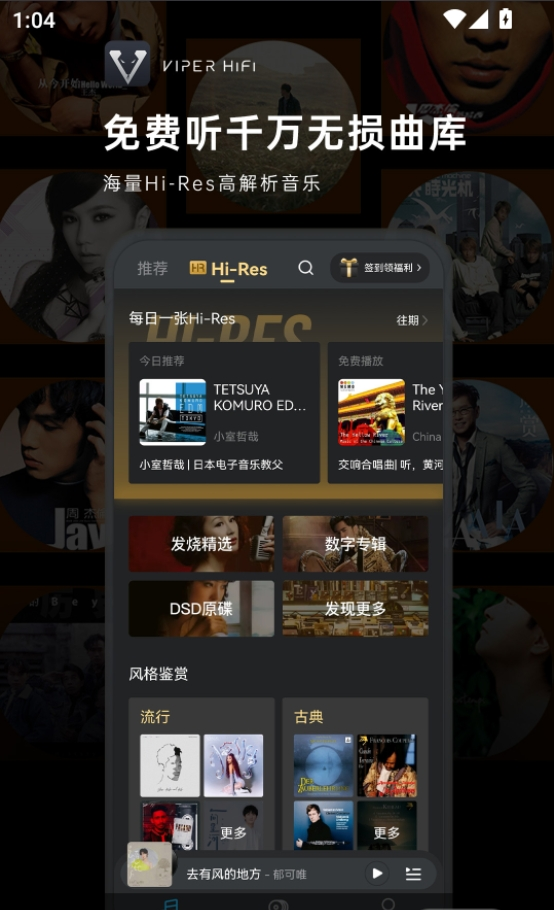

Poweramp 用了两年：从 DSD 播放器到每天离不开的音乐管家
装它快两年了，从 v3.8 一路更到 v3.9。当初冲着 DSD 支持和 AutoEq 来的，现在每天离不开的反而是文件夹视图和每设备 EQ 切换。说点时间沉淀下来的真实感受。
装 Poweramp 到现在快两年了，从 v3.8 一路更到现在的 v3.9。它的官网把 DSD 原生支持和 AutoEq 预设列为核心卖点——当初作为一个 Sony WH-1000XM5 + 水月雨 Blessing 3 的双持党，之前换过三个播放器，要么 EQ 拉胯要么 DSD 经常爆音，听烧友群里反复安利就下了。安装包从官方下载拿的，不贵，买断制，这点很关键。
越用越顺手的三个地方
AutoEq 每设备预设切换，这个是真的杀手级功能。刚开始我以为就是个噱头——导入个频响曲线能有多难？没想到 Poweramp 把它做细了：每一副耳机可以单独存一套 AutoEq + Preamp 微调，切换蓝牙设备时自动切对应预设。早上出门戴 WH-1000XM5（AutoEq 调好 +2dB Preamp），回家插 Blessing 3（AutoEq + 0dB），完全不用手动切 EQ。AutoEq 库里常见耳机基本都有，Sennheiser、Sony、Shure 都在，连水月雨、KZ 这些国内 IEM 品牌也收录得很全。导入也简单，设置里搜 AutoEq 输入型号就行，直接下载自动应用。

文件夹视图，这个可能是发烧友才懂的爽点。之前用其他播放器，默认按艺术家/专辑分曲库，ID3 标签乱一点就找不着歌。Poweramp 有个侧栏最底下的"文件夹"选项，完全按文件系统目录树展示——我自己整理好的 /Music/古典/巴赫/平均律/ 这种层级，点进去就是原样，不依赖任何标签。现在每天找歌基本都从文件夹视图进，按艺术家/专辑分反而成了偶尔用的备用。
皮肤跟随系统主题。用的是 Android 13 之后的 Material You 动态取色，Poweramp 的深色皮肤跟系统色自动匹配，不用折腾第三方皮肤。内置那套 Dark 皮肤设计本来就比浅色用心，Pro Buttons 专业按钮样式配上静态进度条，干净不花哨。试过装过第三方皮肤，后来都卸了——不是不好看，是每次 Poweramp 更新后第三方皮肤容易出兼容问题，内置的稳。
越用越烦的那些小毛病
DSD 偶尔还是会爆音，特别是 DoP 模式配某些老 DAC。最头疼的是症状随机——同一首 DSD128 文件，有时正常有时爆音，完全没规律。后来翻了 Poweramp文档 才搞明白：DoP 把 DSD 比特流装进 PCM 容器，容器采样率和 DAC 预期不匹配就会爆。现在我的解决办法是 DSD 模式直接设成 Native，不行就转 PCM 兜底，USB Exclusive Output 一定要开，Bit Perfect 设 Follow Track 不强制统一采样率。重采样器选 SoX 最高质量那档，EQ 关掉高 Q 值增益，Limiter 常开。按这套来之后爆音基本没了，但第一次排查的时候真的费了不少功夫。
曲库扫描偶尔把不该扫的拉进来。默认扫描手机存储所有音频，Download 目录的临时文件、微信语音缓存、其他 App 的离线缓存有时会混进来。现在每次扫完都要手动去设置里把 Download、Android/data/ 下面那些缓存目录加进排除列表，文件类型也只勾 FLAC、WAV、DSD 几种，扫完再手动触发一次重新扫描才干净。这个习惯用了快一年才固定下来，刚开始不知道排除目录在哪，看着曲库里混了一堆乱七八糟的文件头疼了好一阵。
设置项太多了。Poweramp 的设置菜单是出了名的长——音频输出、重采样器、EQ、AutoEq、DSD 模式、Bit Perfect、USB Exclusive、Limiter、Dither……第一次打开真的懵。很多参数之间有联动，比如 AutoEq 预设导入前要先清空现有 EQ，不然叠加用会乱。DSD 播放出问题要同时检查五六个地方。这个是 Poweramp 的双刃剑：可调项多是专业的证明，但新手门槛确实高。
每天离不开和碰都没碰的
每天离不开的，排在第一的是文件夹视图，第二是AutoEq 每设备预设，第三是USB Exclusive + DSD Native 这套稳定配置。这三个已经形成了肌肉记忆，打开播放器→文件夹视图找歌→自动切好 EQ→开播，一套流程不用想。
碰都没碰过的功能，说个反直觉的：均衡器里的手动调音。买 Poweramp 之前我还挺期待自己动手调 EQ 的，结果 AutoEq 预设用下来真的不需要手动调——客观测量的平均值已经解决了 80% 的基础调音，剩下的 Preamp 微调两下就够了。Reverb 混响、Tempo 变速这些 DSP 也基本没碰过，听无损的时候关掉所有 DSP、Bit Perfect Follow Track 是我的默认配置。
当初的几个判断被时间修正了
低估了文件夹视图的价值。当初觉得"文件夹视图不就是按目录看吗，有什么稀罕的"，现在才发现对发烧友来说这是刚需——自己整理好的目录结构比 ID3 标签可靠多了。
高估了手动调音的意义。之前在论坛上看老烧们晒手动 EQ 曲线，觉得那才是"真玩家"，结果 AutoEq 打底 + Preamp 微调的方案长期用下来更稳定、更省心。科学和经验之间，现在我更倾向先信科学打底，经验再微调。
低估了设置项的学习成本。Poweramp 的设置真的不是"开了就能用"，DSD 爆音那次排查花了我一个晚上才搞明白 DoP 和 Native 的区别。但换个角度想，这些设置项恰恰说明它是面向发烧友做的——每一个你能想到的细节都给了你控制权。
去留结论
不会卸载。目前 Android 生态里，能同时做到 DSD Native/DoP/PCM 三种模式完整支持 + AutoEq 原生导入 + 文件夹视图的播放器，Poweramp 基本是独一份。而且买断制对长期用户友好，不像某些订阅制播放器用着用着涨价。
什么信号出现该换？说两个：一是出现一个比它更轻量但保住 DSD + AutoEq + 文件夹视图这三个核心功能的替代品；二是 Poweramp 转订阅制或者更新节奏明显变慢（现在基本每个月更一次，v3.8 到 v3.9 之间大版本更新也没断过）。短期内看不到这两种情况，大概率会一直用下去。
最后说句题外话，Poweramp 能在 Android 播放器市场撑这么多年，靠的真不是营销——是那些老烧写的 AutoEq 预设、是那些踩过 DSD 爆音坑的人写的排查指南、是设置菜单里密密麻麻的参数背后藏着的对声音的尊重。去它的文档翻一下就明白了，每一个功能点都有详尽的说明和案例，不像很多竞品界面漂亮但文档稀烂。说到备份，我把这套资料在 GitHub 主仓库之外，还分别在 Gitee 和 GitCode 留了副本，国内网络访问镜像更方便。